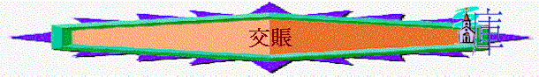

經文：試分享一次你交功課/poject後得高分的經歷(當
又試分享一次你得低分的經歷！
我們在地上要交功課，做生意的人則要交賬，路19:11-27就題及信主的人也要交賬，究竟要交什麼賬？如何交？我們今日嘗試查考
一.主必回來(路19:11-12)
1.耶穌要快上耶路撒冷，耶路撒冷是甚麼地方？祂要回耶路撒冷，令人聯想甚麼事？為何他們有這聯想？「神的國」又指甚麼？
2.耶穌因為他的聯想就設立了一個比喻，而19:11題到「貴冑」，何為「貴冑」？他將會做甚麼事情？你猜想貴冑想比喻誰？比喻他將會做甚麼事？
3.在這幾年的全球新聞中，你有沒有聯想到主要快回來？為甚麼？
二.人要交賬(路19:13)
1.貴冑要遠行，他交給十個僕人甚麼東西？你差想一錠銀子等於今日幾多錢？
2.這些銀子是否屬於僕人的？貴冑要求他作甚麼事情？
3.若貴冑代表主，你認為僕人代表誰？
4.今日我們所擁有甚麼事情？(如生命、時間、學業、工作、金錢、才幹……)，那些是屬於你自己，那些屬於主？主又期望我們如何處理所擁有的事？
三.僕人表現(路19:15-25)
1.貴冑回來後，其中一件關注的事是甚麼？
2.你認為頭一個僕人的表現好嗎？為甚麼？
3.主人對他有甚麼評價？何謂「良善」？何謂「忠心」？
4.在你生活中，有否見過一些傭人/同學是良善及忠心的？
5.主人除了讚賞他外，還對他有甚麼回應？你認為管多十座城是否一件不好事(因有人覺得是要做更多事，更辛苦了)
6.第二個僕人的表現又如何？主人對他的回應與先前有甚麼相同與不同？你認為公平嗎？
7.最後的僕人表現怎樣？你認為他的解釋合理？何謂「沒有放下的還要去拿，沒有種下的還要去收？」
8.主人對他有甚麼回應？主人對他有甚麼稱呼？為何有這稱呼？和第一個僕人稱讚的稱呼有甚麼不同？你認為他真是怕主人才沒做生意，還是有其他原因？何以見得？你又認為他情有可原嗎？主人又如何責備他呢？
9.最終主人對他有甚麼行動？你認為這行動是懲罰嗎？(因有人認為本來的一錠銀，根本不屬他，收回也不見得有甚麼損失)
10.主人將收回的給誰？你認為合理嗎？
11.你今日在主交託給你管理的時間/學業/生命/才幹上，至今表現如何？你覺自己像那個僕人？為甚麼？
12.若今天重新來過，你想在那方面為主「賺」更多/為主做得更好/及更多？如何做得更好？
四.另類回應(路19:14,27)
1.19:14又提到甚麼人？他們應指誰？有甚麼不好的表現？
2.主人得國回來後，如何對待19:14的人？(19:27)主人對他們有甚麼稱號？
3.今日你認識一些朋友/同學/家人不喜歡耶穌嗎？若他們繼續下去，會有甚麼結果，你又有沒有想過可以作甚麼事情？
總結：今日在查經中，分享你的得著/學習
祈禱
可參考以下資料(http://www.ccbiblestudy.org/New%20Testament/42Luke/42CT19.htm)